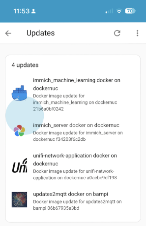
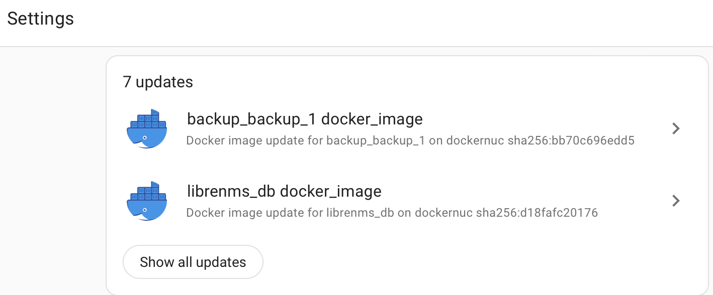

updates2mqtt¶
Summary¶
Use Home Assistant to notify you of updates to Docker images for your containers and optionally perform the pull (or optionally build) and update.

Description¶
updates2mqtt perioidically checks for new versions of components being available, and publishes new version info to MQTT. HomeAssistant auto discovery is supported, so all updates can be seen in the same place as Home Assistant’s own components and add-ins.
Currently only Docker containers are supported, either via an image registry check, or a git repo for source. The design is modular, so other update sources can be added, at least for notification. The next anticipated is apt for Debian based systems.
Components can also be updated, either automatically or triggered via MQTT, for example by hitting the Install button in the HomeAssistant update dialog. Icons and release notes can be specified for a better HA experience.
Install¶
updates2mqtt prefers to be run inside a Docker container.
Manual¶
Docker¶
See examples directory for a working docker-compose.yaml which presumes that updates2mqtt has been checked out inside a build subdirectory of the docker-compose directory.
Configuration¶
Create file config.yaml in conf directory. If the file is not present, a default file will be generated.
Example configuration file¶
This is a maximal config file, the minimum is no config file at all, which will generate a default config file. The only mandatory values are the MQTT user name and password.
node:
name: docker-host-1
mqtt:
host: localhost
user: mymqttuser
password: mymqttsecretpassword
port: 1883
topic_root: updates2mqtt
homeassistant:
discovery:
prefix: homeassistant
enabled: true
state_topic_suffix: state
docker:
enabled: true
default: true
allow_pull: true # if true, will do a `docker pull` if an update is available
allow_restart: true # if true, will do a `docker-compose restart` if an update is installed
allow_build: true # if true, will do a `docker-compose build` if a git repo is configured
compose_version: v2 # Controls whether to use `docker-compose` (v1) or `docker compose` (v2) command
default_entity_picture_url: https://www.docker.com/wp-content/uploads/2022/03/Moby-logo.png
device_icon: mdi:train-car-container
discover_metadata:
linuxserver.io:
enabled: true
cache_ttl: 604800 # cache metadata for 1 week
scan_interval: 10800 # sleep interval between scan runs, in seconds
log:
level: INFO
Moving Secrets Out of Config¶
Example use of environment variables, e.g. for secrets:
Customizing images and release notes¶
Individual docker containers can have customized entity pictures or release notes, using env variables, for example in the docker-compose.yaml or in a separate .env file:
environment:
- UPD2MQTT_PICTURE=https://frigate.video/images/logo.svg
- UPD2MQTT_RELNOTES=https://github.com/blakeblackshear/frigate/releases
The images will show up in the Update section of Settings menu in HomeAssistant, as will the release notes link. SVG icons should be used.
Some popular services have the icon and release note links pre-configured, in common_packages.yaml,
and packages from linuxserver.io can have metadata automatically discovered.
Icon Sources¶
Automated updates¶
If Docker containers should be immediately updated, without any confirmation
or trigger, e.g. from the HomeAssistant update dialog, then set an environment variable UPD2MQTT_UPDATE
in the target container to Auto ( it defaults to Passive)
Custom docker builds¶
If the image is locally built from a checked out git repo, package update can be driven by the availability of git repo changes to pull rather than a new image on a Docker registry.
Declare the git path using the env var in UPD2MQTT_GIT_REPO_PATH in the docker container ( directly or via an .env file).
The git repo at this path will be used as the source of timestamps, and an update command will carry out a
git pull and docker-compose build rather than pulling an image.
Note that the updates2mqtt docker container needs access to this path declared in its volumes, and that has to be read/write if automated install required.
Environment Variables¶
The following environment variables can be used to configure updates2mqtt:
| Env Var | Description | Default |
|---|---|---|
UPD2MQTT_UPDATE |
Update mode, either Passive or Auto. If Auto, updates will be installed automatically. |
Passive |
UPD2MQTT_PICTURE |
URL to an icon to use in Home Assistant. | Docker logo URL |
UPD2MQTT_RELNOTES |
URL to release notes for the package. | |
UPD2MQTT_GIT_REPO_PATH |
Relative path to a local git repo if the image is built locally. |
Release Support¶
| Ecosystem | Support | Comments |
|---|---|---|
| Docker | Scan. Fetch | Fetch is docker pull only. Restart support only for docker-compose image based containers. |
HomeAssistant integration¶
Any updates that have support for automated install will automatically show in the Home Assistant settings page.

For Home Assistant integration, updates2mqtt represents each component being managed as a MQTT Update entity, and uses [MQTT discovery(https://www.home-assistant.io/integrations/mqtt/#mqtt-discovery)] so that HomeAssistant automatically picks up components discovered by updates2mqtt with zero configuration on HomeAssistant itself.
There are 3 separate types of MQTT topic used for HomeAssisstant integration:
- Config to support auto discovery. A topic is created per component, with a name like
homeassistant/update/dockernuc_docker_jellyfin/update/config. This can be disabled in the config file, and thehomeassistanttopic prefix can also be configured. - State to report the current version and the latest version available, again one topic per component, like
updates2mqtt/dockernuc/docker/jellyfin. - Command to support triggering an update. These will be created on the fly by HomeAssistant when an update is requested, and updates2mqtt subscribes to pick up the changes, so you won’t typically see these if browsing MQTT topics. Only one is needed per updates2mqtt agent, with a name like
updates2mqtt/dockernuc/docker
If the package supports automated update, then Skip and Install buttons will appear on the Home Assistant interface, and the package can be remotely fetched and the component restarted.
Development¶